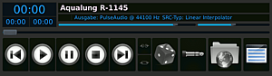

Kompilieren
Dieser Artikel wurde für die folgenden Ubuntu-Versionen getestet:
Ubuntu 14.04 Trusty Tahr
Artikel für fortgeschrittene Anwender
Dieser Artikel erfordert mehr Erfahrung im Umgang mit Linux und ist daher nur für fortgeschrittene Benutzer gedacht.
Zum Verständnis dieses Artikels sind folgende Seiten hilfreich:
Archive entpacken, optional
Subversion, optional
Git, optional
Der Audioplayer Aqualung bietet Unterstützung für zahlreiche Audioformate und Soundsysteme. Ihre Unterstützung wird beim Kompilieren des Programms eingebaut - oder auch nicht. Je nach Anforderungen lohnt es sich daher, das Programm auch unter Ubuntu selbst zu kompilieren.
Abhängigkeiten¶
Einige Pakete werden zum Bau zwingend vorausgesetzt, andere sind optional. Im Folgenden werden alle Abhängigkeiten zum Bau aufgelistet. Außerdem ist aufgeführt, mit welchem Konfigurationsschalter eine Option abgestellt werden kann.
Grundvoraussetzungen¶
Zum Bau werden zwingend einige Pakete benötigt[1] und grundlegende Kenntnisse im Umgang mit dem Terminal vorausgesetzt[2].
autotools-dev (GNU Build System - Werkzeuge zum Bauen)
autoconf
autopoint
libgtk2.0-dev (GTK+-2.0 - grafische Oberfläche)
libxml2-dev (libXML2 - XML-Parser-Bibliothek)
 mit apturl
mit apturl
Paketliste zum Kopieren:
sudo apt-get install autotools-dev autoconf autopoint libgtk2.0-dev libxml2-dev
sudo aptitude install autotools-dev autoconf autopoint libgtk2.0-dev libxml2-dev
Optionale Features¶
Optionale Features erweitern den Funktionsumfang von Aqualung.
| Paket(e) | Beschreibung | Abschalten mit |
| liblrdf0-dev (universe) | Manipulation von RDF Dateien durch LADSPA Plugins | --without-ladspa |
| libcdio-paranoia-dev | Lesen von Audio CDs | --without-cdda |
| libcddb2-dev (universe) | Zugriff auf CDDB/FreeDB Server | --without-cddb |
| libsamplerate0-dev | Konvertierung der Abtastrate in hoher Qualität | --without-src |
| libifp-dev (universe), libusb-dev | Unterstützung des iRiver iFP Treibers | --without-ifp |
| Podcast Unterstützung | --without-podcast | |
| liblua5.1-0-dev | Lua Erweiterung | --without-lua |
Liste der Pakete:
liblrdf0-dev libcdio-paranoia-dev libcddb2-dev libsamplerate0-dev libifp-dev libusb-dev liblua5.1-0-dev
Liste der Optionen:
--without-ladspa --without-cdda --without-cddb --without-src --without-ifp --without-podcast --without-lua
Optionale De- und Encoder¶
Abhängig davon, mit welchen Dateiformaten Aqualung umgehen soll, müssen die entsprechenden Entwicklerpakete installiert werden.
| Paket(e) | Beschreibung | Abschalten mit |
| libsndfile1-dev | Dekodierung nicht komprimierter Dateiformate (WAV, AIFF, AU, etc.) und WAV-Enkodierung | --without-sndfile |
| libflac-dev | De- und Enkodierung des Free Lossless Audio Codec | --without-flac |
| libvorbis-dev | Ogg Vorbis-Audiodatei (De- und Enkodierung) | --without-ogg --without-vorbisenc |
| liboggz2-dev (universe), libspeex-dev | Ogg Speex Dekodierung | --without-speex |
| libmad0-dev (universe) | Dekodierung von MPEG Audiodateien (MP3 & Co) | --without-mpeg |
| libmp3lame-dev (universe) | Enkodierung von MP3-Audiodateien | --without-lame |
| libmodplug-dev (universe) | Dekodierung von MOD Dateien (MOD, S3M, XM, IT, etc.) | --without-mod |
| libmpcdec-dev (universe) | Dekodierung von Musepack Dateien | --without-mpc |
| libmpcdec-dev (universe) | Dekodierung der Monkey’s Audio Dateien | --without-mac |
| libwavpack-dev | Dekodierung von WavPack Dateien | --without-wavpack |
| libavformat-dev (universe), libfaad-dev (universe), libmp4v2-dev (universe), libfaac-dev (multiverse) | Diverse Audio-/Video-Codecs, u.a. AC3, AAC, WMA, WavPack und Filmformate. | --without-lavc |
Liste der Pakete
libsndfile1-dev libflac-dev libvorbis-dev liboggz2-dev libspeex-dev libmad0-dev libmp3lame-dev libmodplug-dev libmpcdec-dev libwavpack-dev libavformat-dev libfaad-dev libmp4v2-dev libfaac-dev
Liste der Optionen:
--without-sndfile --without-flac --without-vorbisenc --without-speex --without-mpeg --without-lame --without-mod --without-mpc --without-mac --without-wavpack --without-lavc
Ausgabe-Unterstützung¶
Aqualung unterstützt die Ausgabe über verschiedene Soundsysteme. Bei Ubuntu kommt PulseAudio zum Einsatz. Unterstützung für JACK ist nicht zwingend nötig. Ist sie gewünscht, muss abhängig von der JACK-Version das passende Entwicklerpaket installiert werden.
| Datei / Paket | Soundsystem | Abschalten mit |
sndio.h | sndio | --without-sndio |
soundcard.h (bereitgestellt durch libc6-dev) | OSS | --without-oss |
| libasound2-dev | ALSA | --without-alsa |
| libjack-dev ODER libjack-jackd2-dev | JACK Audio Connection Kit | --without-jack |
| libpulse-dev | PulseAudio | --without-pulse |
Liste der Pakete:
libasound2-dev libpulse-dev libjack-dev ODER libjack-jackd2-dev
Liste der Optionen:
--without-oss --without-alsa -without-jack --without-pulse
Weiter Informationen finden sich auf Compiling Aqualung  in der Dokumentation des Projekts.
in der Dokumentation des Projekts.
|  |
| Aqualung mit Oxygen-Icons |
Quellcode¶
Falls nicht vorhanden, wird ein Verzeichnis für Quellcode angelegt und betreten, beispielsweise ~/src.
Tarball¶
Das letzte Release oder ein aktueller Snapshot können als Tarballs (tar.gz-Archive) von der Projektseite heruntergeladen und entpackt werden[3].
Codeverwaltung¶
Der aktuelle Stand der Entwicklung kann mittels Subversion[4] oder Git[5] aus der Codeverwaltung des Projekts geladen werden. Im Gegensatz zu den Tarballs ist dabei nicht sichergestellt, dass der Kompiliervorgang erfolgreich sein wird.
# Subversion svn co https://aqualung.svn.sourceforge.net/svnroot/aqualung/trunk aqualung # Git git clone git://github.com/jeremyevans/aqualung.git
Kompiliervorgang und Installation¶
Der Kompiliervorgang wird mit dem Skript autogen.sh im aqualung-Quellverzeichnis gestartet. Anschließend folgen die üblichen drei Schritte zum Kompilieren und Installieren[6]. Bei der Installation mittels checkinstall muss die Versionsnummer angepasst werden, beispielsweise 1.0.0-r1309. Außerdem können die im Folgenden aufgeführten Abhängigkeiten des fertigen Programms angegeben werden.
Abhängigkeiten des fertigen Programms¶
Abhängig davon, welche Optionen gewählt wurden, wird Aqualung verschiedene Abhängigkeiten haben, wenn es installiert wird.
Die minimalen Abhängigkeiten für die Installation sind:
libc6, libcairo2, libgdk-pixbuf2.0-0, libglib2.0-0, libgtk2.0-0, libpango-1.0-0, libxml2, zlib1g
Optionale Abhängigkeiten können sein (Features, De-/Encoder, Ausgabe):
liblrdf0, libcddb2, libcdio-cdda1, libcdio-paranoia1, libcdio13, liblua5.1-0, libsamplerate0, libifp4, libusb-0.1-4, libflac8, libmad0, libmodplug1, libmp3lame0, libmpcdec6, libogg0, liboggz2, libsndfile1, libspeex1, libvorbis0a, libvorbisenc2, libvorbisfile3, libwavpack1, libmp3lame0, libfaad2, libfaac0, libmp4v2-2 libasound2, libjack-jackd2-0 ODER libjack0, libpulse0
Wurde die LADSPA-Plugin-Unterstützung aktiviert, können zusätzlich die swh-plugins (universe) als empfohlenes Paket angegeben werden.
Eintrag im Startmenü¶
Ein Programmstarter /usr/share/applications/aqualung.desktop kann wie folgt aussehen:
[Desktop Entry] Name=Aqualung Comment=Gapless Audio-Player Exec=aqualung Icon=/usr/local/share/aqualung/icon_64.png Categories=GTK;AudioVideo;Audio;Player; Terminal=false Type=Application
- Erstellt mit Inyoka
-
 2004 – 2017 ubuntuusers.de • Einige Rechte vorbehalten
2004 – 2017 ubuntuusers.de • Einige Rechte vorbehalten
Lizenz • Kontakt • Datenschutz • Impressum • Serverstatus -
Serverhousing gespendet von